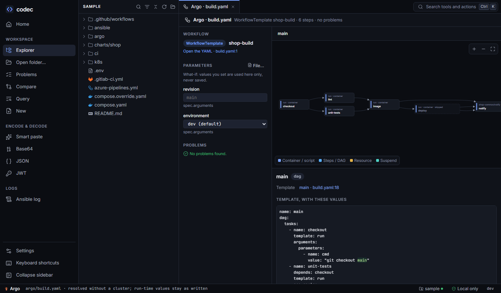

Argo
The Argo view reads a workflow the way the Argo controller would: every step with the template it runs and the values it receives, templateRef followed into other files, and the DAG drawn as a graph — without a cluster.

argo/build.yaml from the sample. With environment=dev, the deploy step is marked skipped.What it reads#
Workflow, WorkflowTemplate, ClusterWorkflowTemplate and CronWorkflow files, workflows embedded in Argo Events Sensors, and the same objects rendered by a Helm chart (the Argo tab of the Helm view). Raw Helm templates work too; Helm's {{ "{{" }} escapes are understood. Open it with Argo on the file's toolbar or "Argo: file" in the palette.
How values are resolved#
For each step codec finds the template it calls — in the same file, or through templateRef in any Argo file of the open folder — and fills in its inputs from, in order:
- what-if parameters you set in the view (or a parameter file),
- the workflow's
spec.arguments, - the call site's
arguments.parameters, - the template's input defaults,
- loop items (
withItems,withParamwhere it is literal).
Values that only exist at run time — step outputs, workflow.uid, event payloads — stay as written and are marked (known at run time). codec never guesses them.
A parameter with enum becomes a dropdown, and values outside it are flagged.
Steps and DAGs#
- Steps are drawn as sequential groups, parallel steps side by side.
- DAGs follow
dependenciesanddependsexpressions. Edges are labelled with the condition (Failed,Succeeded,AnySucceeded…), and each task says in words when it runs. whenconditions are evaluated once their values are known; a step that wouldn't run is drawn dashed as "skipped with these values".- Click a step for its details: the template with the values filled in, where each value came from, and links to the YAML. Nested templates can be drilled into.
In the editor#
- The outline lists templates by type (container, script, dag, steps, resource, suspend) with the entrypoint marked.
- Go to definition and hover for template names,
templateRef(other files, raw Helm templates included),dependsterms and parameters. - Diagnostics: missing templates, bad
dependsexpressions, unknown tasks, undeclared inputs, missing or unused arguments. - Snippets and completion: a DAG task that depends on the last task;
depends:andtemplate:complete from the DAG.
Argo CD#
Applications and ApplicationSets show where they deploy from and to: source repository, path and revision, Helm value files and parameters, destination cluster and namespace, sync policy, and ApplicationSet generators. Render this app opens the chart in the Helm view with the app's value files and parameters applied, when the chart is in the open folder.
From the command line#
codec argo resolve argo/build.yaml argo/common.yaml -p environment=prod
WorkflowTemplate shop-build argo/build.yaml:1
parameters
revision = main
environment = prod
main → dag
checkout → run · container · alpine:3.22
cmd = git checkout main
image → run · container · alpine:3.22
· runs when unit-tests succeeded (or was skipped) and lint succeeded (or was skipped)
cmd = make image TAG=main
deploy → run · container · alpine:3.22
· when prod == prod → true
cmd = make deploy ENV=prod
notify → shop-common/notify · container · curlimages/curl:8.15.0
· runs when image failed or deploy succeeded or deploy skipped
channel = #shop-builds
codec argo graph argo/build.yaml --format mermaid # or --format dot
helm template ./chart | codec argo resolve -w deploy-wf # from a renderresolve exits with 2 when it finds problems. Options: -w picks a workflow, -p name=value sets parameters, --parameter-file reads them from a file, --json prints the resolution as JSON.